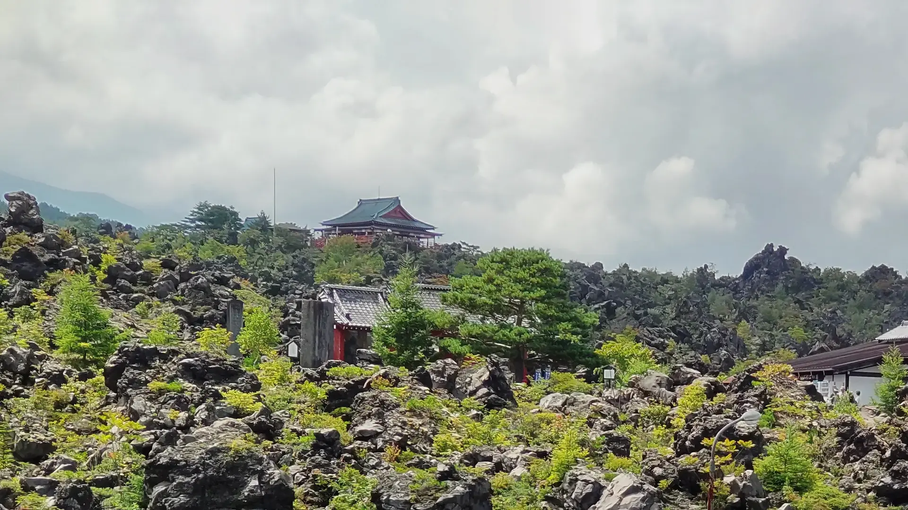
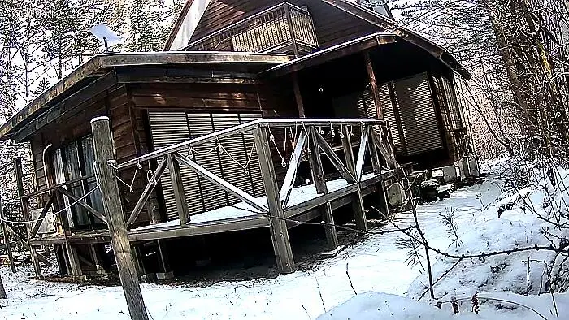
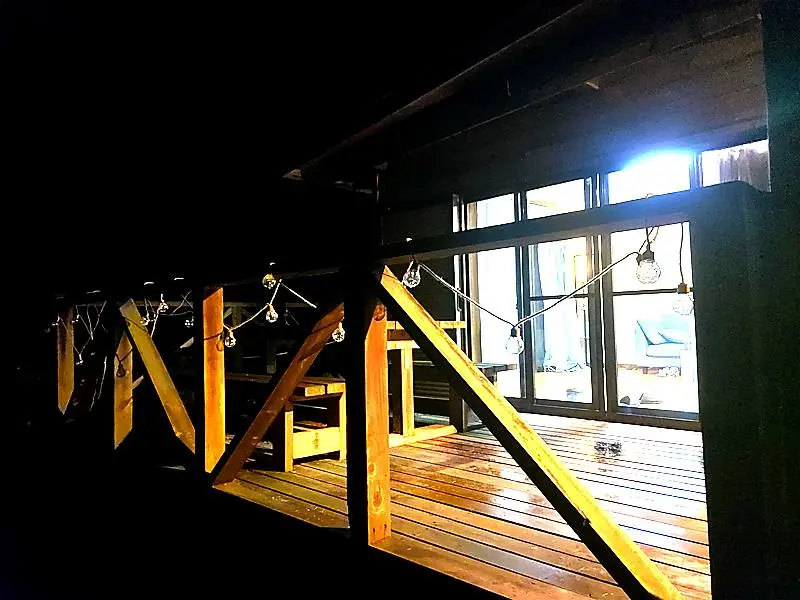
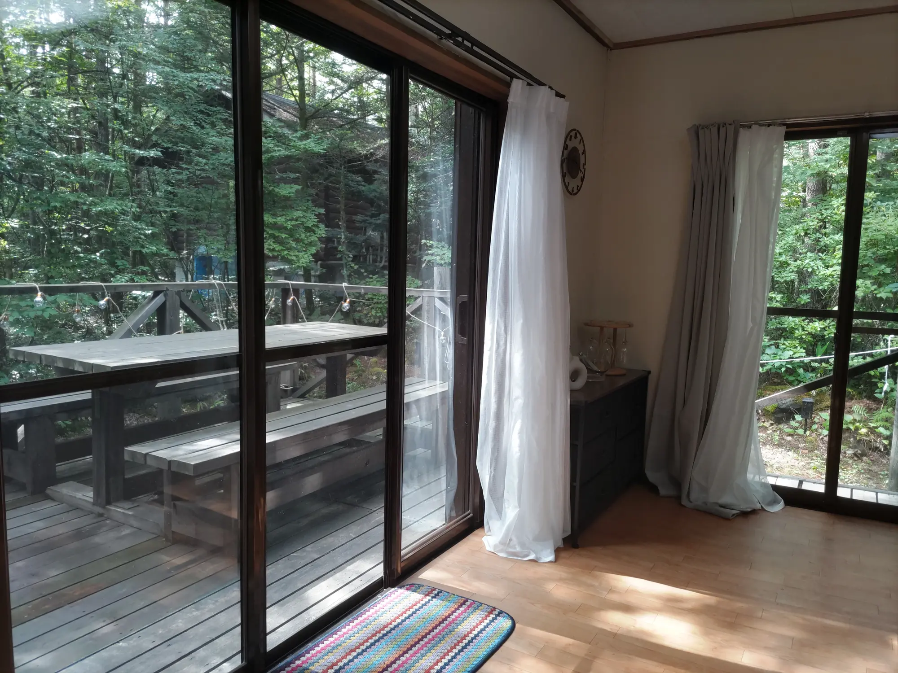
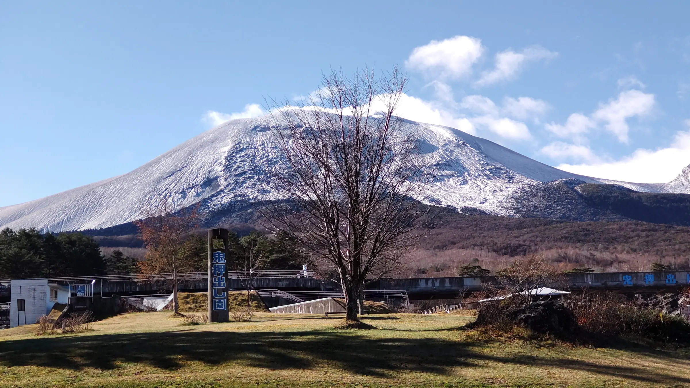

Tsumagoi · Gunma · 1,100 m
森に、余白を。
浅間山麓の森に包まれた、一日一組のためのプライベート・マウンテンスタジオ。集中する。整える。何もしない。
SCROLL
The place
街の速度を置いて、森の時間へ。
標高1,100m。木々、自然光、静けさに包まれた山の拠点。誰かと共有することなく、その日の空間を一組だけで使えます。
1,100 mALTITUDE
1 groupPRIVATE USE
8 peopleMAXIMUM
StarlinkCONNECTED

Asama highlands
森、光、静けさ。
鬼押出し園と北軽井沢エリアに近い、自然の中のプライベートスペース。季節と時間によって変わる光を感じながら過ごせます。
Ways to use the space
自分の時間を、取り戻す。
目的を詰め込む必要はありません。仕事、リトリート、創作。必要な使い方を選んでください。
Private mountain studio
宿泊開始前の今、日帰りの静かな拠点として。
現在は宿泊施設として営業していません。コワーキング、ヨガ・リトリート、少人数での創作利用をご案内しています。
Coworking
¥4,500 / day
2+ people ¥4,000 / person
Weekly ¥18,000
Yoga & Retreat
¥12,000 / day
Groups from 4 ¥8,000 / person
Up to 8 people
Real place · Real seasons
RUTA77を見る。



RUTA77 STUDIO